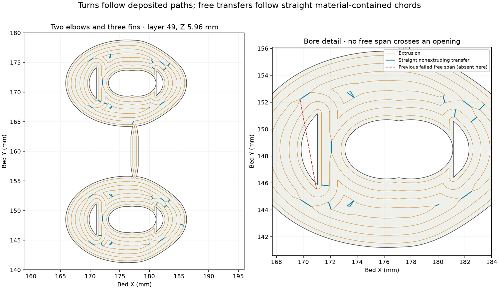
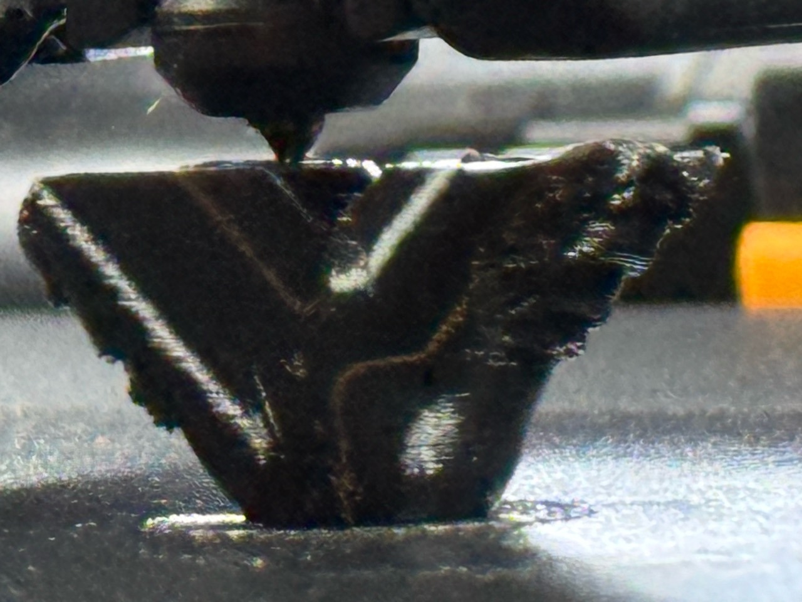

TPU
Soft walls, seals and travel
Read where a strand can attach when the nozzle leaves a wall. Short moves within deposited material keep chords out of openings.


| Right nozzle | {{tpu:/nozzle_diameter/1}} mm |
|---|---|
| Nozzle / glued Engineering Plate | {{tpu:/nozzle_temperature/0}} / {{tpu:/eng_plate_temp/0}} °C |
| First / ordinary layers | {{tpu:/initial_layer_print_height}} / {{tpu:/layer_height}} mm |
| Maximum volumetric speed | {{tpu:/filament_max_volumetric_speed/0}} mm³/s |
| Wall and cap | One spiral wall, processed planar cap |
Print the processed archive
The Siraya elbow and Bambu sleeve use retained path processing. On the sleeve, the planar cap is routed before the spiral wall begins. Read its solid thickness from the emitted cap courses.
Use the stock, orientation and plate named for each flat seal, gasket and grip.
Derek reported no visible strings on the Siraya elbow and a seal that seemed as good as before. The Bambu sleeve result covers general print quality.
Elbow result · Sleeve and processed archive · White gasket recipe · Seal and grip recipes